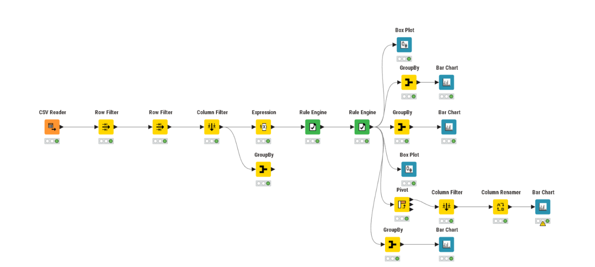
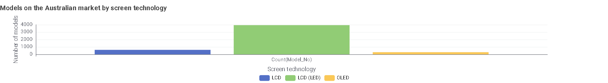
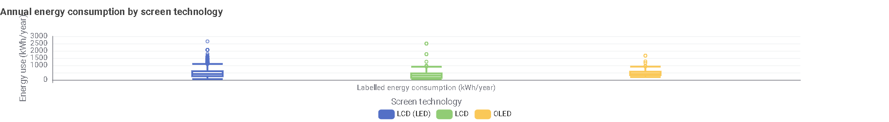
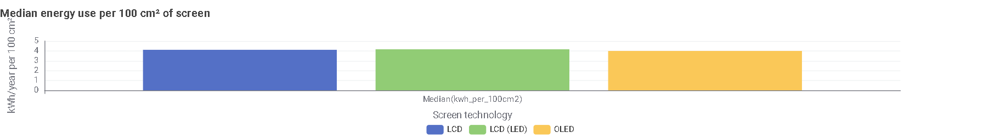
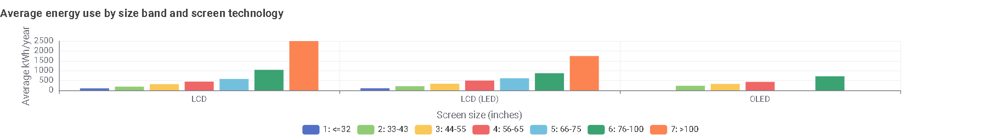
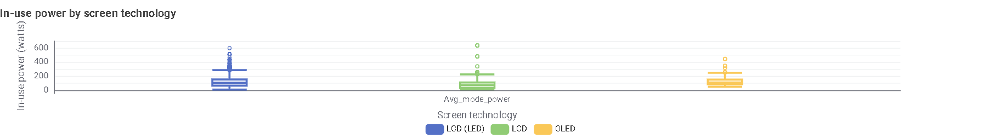
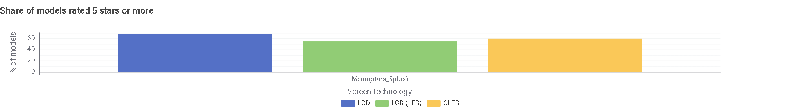

Televisions
Does the screen technology (LCD, LCD (LED) or OLED) change how much electricity a TV uses? This page looks only at TVs currently available on the Australian market.
Data cleaning
The dataset lists 5,030 TV models registered under the Australian energy rating scheme (32 columns). The question is about televisions on sale in Australia today, so the data was cleaned in KNIME as follows.
- CSV Reader: load tv_2026_10_02.csv and check the column types.
- Row Filter: keep only Availability Status = Available (removes 11 models that are no longer available).
- Row Filter: keep only models whose SoldIn contains “Australia” (removes 180 models sold only in New Zealand or Fiji and New Zealand).
- Column Filter: keep Brand_Reg, Model_No, screensize, Screen_Area, Screen_Tech, Avg_mode_power, Star2 and Labelled energy consumption (kWh/year). Drop URLs, image links and other unused columns.
- Quality checks: Screen_Tech has only three consistent values (LCD, LCD (LED), OLED) and there are no missing energy values. SubmitStatus is “Approved” for every row.
- Math Formula: create kwh_per_100cm2 = kWh per year / Screen_Area × 100, so technologies can be compared without bigger screens dominating the result. Also create size_inch = screensize / 2.54.
- Rule Engine: create size_band (≤32, 33–43, 44–55, 56–65, 66–75, 76–100, >100 inches) so TVs of similar size can be compared, and stars_5plus (Star2 ≥ 5).
Result: 4,839 models (3,940 LCD (LED), 607 LCD, 292 OLED). 228 rows share a brand and model number with another row; they are kept as separate registrations.

Analysis: energy use by screen technology
1Which screen technologies are on the market?

LCD (LED) dominates with 3,940 of 4,839 models (81%). LCD has 607 (13%) and OLED 292 (6%).
2How much energy does each screen technology use?

At first glance LCD looks cheapest to run: median 296 kWh per year, against 408 for LCD (LED) and 422 for OLED.
| Screen technology | Models | Median kWh/year | Average kWh/year | Average screen size |
|---|---|---|---|---|
| LCD | 607 | 296 | 350 | 51 inches |
| LCD (LED) | 3,940 | 408 | 462 | 60 inches |
| OLED | 292 | 422 | 486 | 65 inches |
The last column explains the gap: the average LCD TV is about 14 inches smaller than the average OLED, so the raw comparison is not fair.
3Is the difference still there once screen size is removed?

Per unit of screen area the three technologies are almost identical: 4.11 kWh per year for LCD, 4.16 for LCD (LED) and 4.00 for OLED. OLED is only about 4% lower. Most of the raw gap in Figure 3 comes from screen size, not technology.
4Does this hold at the same screen size?

Energy rises steeply with size for every technology. At 33–65 inches the three technologies are close (for example 315 kWh for LCD, 336 for LCD (LED) and 326 for OLED at 44–55 inches). The gap only opens at very large sizes: at 76–100 inches OLED averages 714 kWh per year against 870 for LCD (LED). OLED has no models up to 32 inches or at 66–75 inches, and the over-100-inch band has only 30 models (6 LCD), so treat those bars with care.
5What about power used while the TV is on?

The pattern repeats: median in-use power is 76 W for LCD, 107 W for LCD (LED) and 113 W for OLED. Per 100 cm² of screen it is almost the same for all three (about 1.05 to 1.08 W), so again the gap is mostly screen size.
6Do some technologies get better star ratings?

68% of LCD models have 5 stars or more, against 59% of OLED and 54% of LCD (LED). Star ratings are only a rough guide here, so use the kWh per year on the label to compare models.
Conclusion
Screen technology has only a small effect on a TV's energy use. LCD looks the most efficient only because LCD TVs are smaller. At the same size, LCD, LCD (LED) and OLED use similar amounts of energy, with OLED slightly lower on large screens. In-use power shows the same pattern. For shoppers: pick the size you need, then compare the kWh per year on the energy label of models at that size.